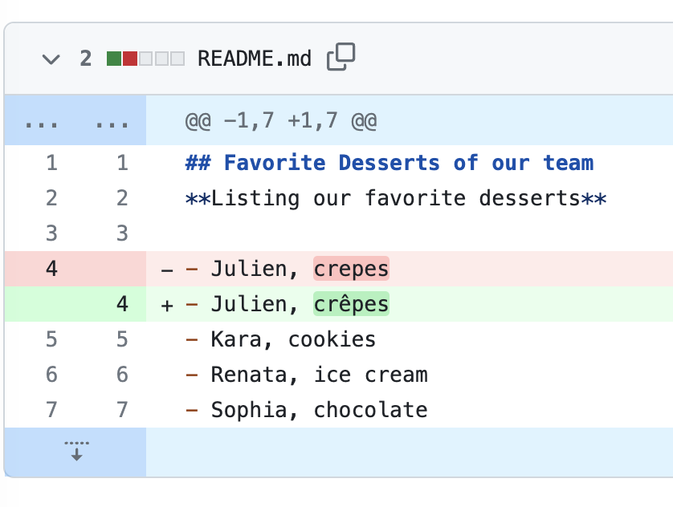
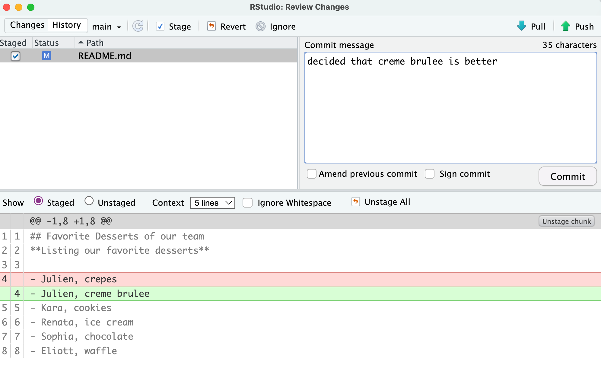
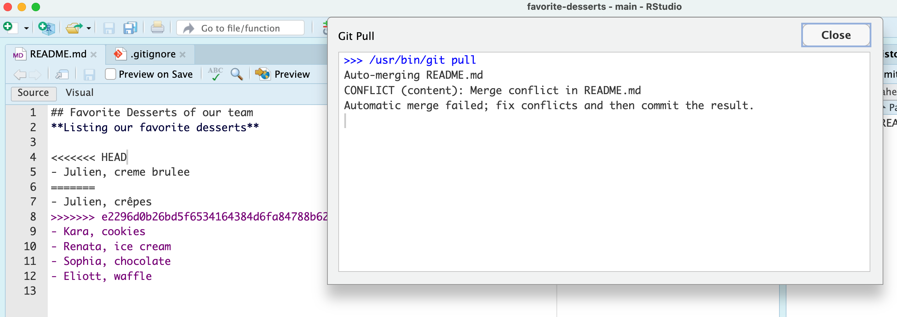
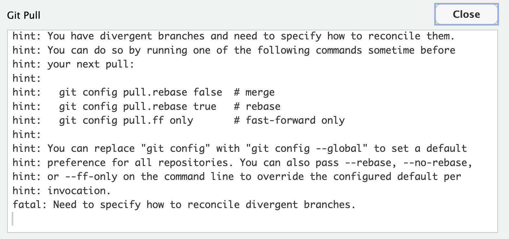
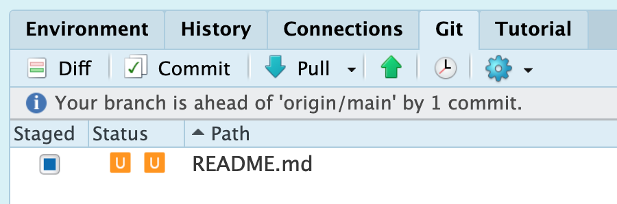
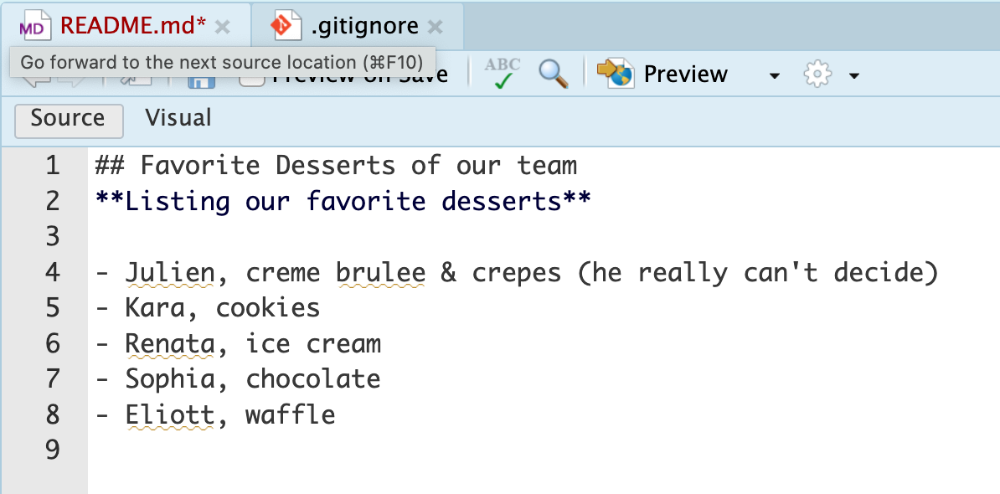
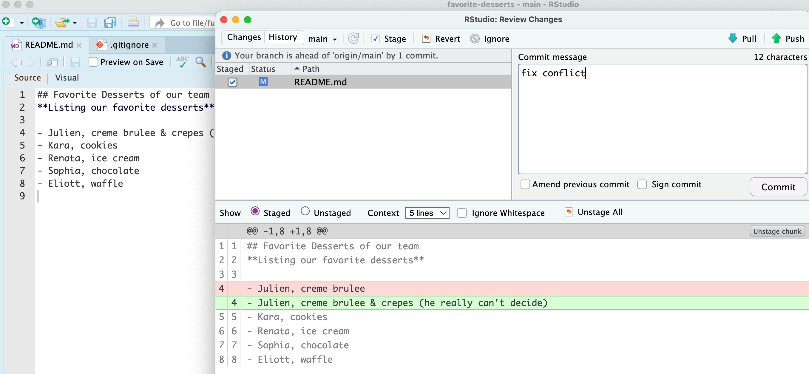
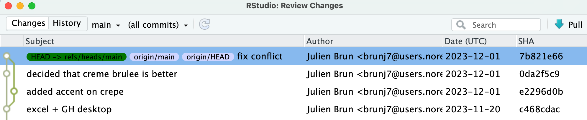

Managing git merge conflicts
First and foremost
You did nothing wrong!! Git is simply asking for your help to merge files because it can not figure it out on its own.
git pull = git fetch (getting things from GitHub) + git merge (merging the versions between your local and GitHub)
A conflict arises when git can not automatically merge two versions of a file. When the changes are on different files or on the same file but far apart, git will figure it out on his own and do the merge automatically. However, if changes are overlapping, git will call you to the rescue because it is not sure which version should be kept. When you are in this situation, you are “stalled” between the git fetch & the git merge and you need to edit the file(s) where there is a conflict. Luckily, git will flag the lines that have different versions for you to look at.
A few tips to deal with merge conflicts
1. If you were not expecting a conflict or want to roll back to your status before the conflict arise
git merge --abortThis does not resolve the conflict but it lets you look more into why you are having a conflict while keeping your local copy of the repository usable.
2. If you know for sure what file version you want to keep
- keep the remote file:
git checkout --theirs conflicted_file.txt - keep the local file:
git checkout --ours conflicted_file.txt
=> You still have to use git add and git commit after this to commit your changes to the git history
3. If you do not know which version to keep
Dig into the files, looking for:
<<<<<<< HEAD
local version (ours)
=======
remote version (theirs)
>>>>>>> [remote version (commit#)]Manually edit the file deleting and modifying your script as needed (including all the symbols git added to flag the conflict). Save the script/file when you are done editing.
=> You still have to use git add and git commit after this to commit your changes to the git history
Even after modifying the files, you can still abort a merge, for example you realized you kept the wrong version.
git merge --abortIf you realize you made a mistake once the merge is resolved, you can always run to go back to the previous commit:
git reset --hardHow to minimize the risk of conflicts?
- Communicate!! Who is working on what script/file today? GitHub issues and tagging people is a great way to do this
commit,pull, andpushoften , so the changes between versions are kept minimal
These two tips should help you on your git conflict free journey!!
If conflicts keep happening in your collaboration, using git branches might be the next step to consider for your team.
Example using RStudio
Ok, let’s create a conflict with our favorite desserts repository.
User 1 is going to change a line on the README an push the change to GitHub.

Now user 2, is going to also make an edit to the README on this same line while forgetting to pull before starting to edit the file
In this example, we will be changing the favorite dessert of the same person:

Save and commit your changes.
Now it is time to pull and push your changes… however git is unsure how to reconcile the two versions of the README.md

Before this you might first have the pop-up below on your screen that prompts you to tell git what techniques it should use to resolve conflicts

We recommend to choose the merge option by copy-pasting this line in the terminal:
git config pull.rebase falseNote the tags that git has automatically inserted in the text to highlight: 1. where is the conflict and 2. what are the two versions you are trying to reconcile. Note also that RStudio is flagging the file with an orange U logo to let you know that the files are Unmerged.

You can edit the README to resolve the conflict to your liking. You could opt to choose one of the version

or to come up with a “blended” version:

Once you are satisfied with your version, you can save the file and commit your changes

Don’t forget to pull and push to synchronize your local changes with GitHub.
If you now look at the history, you can see how git has tracked the conflict resolution. We will talk about branches later on, but spoiler alert it looks very much how you would merge a branch back to the main branch.
